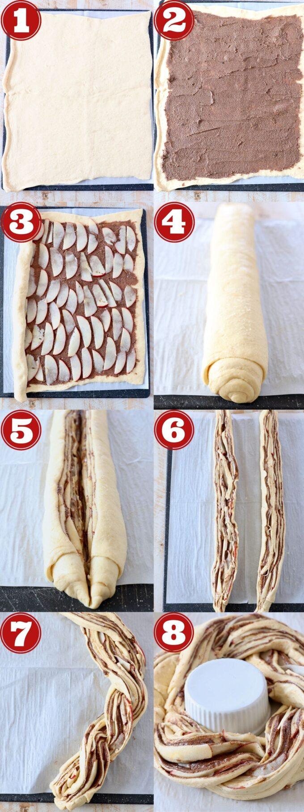

Ingredient you need
-
Crescent roll dough (you can use canned cresent roll dough, or sheets of canned crecent dough either will work, the sheets of dough are simply a little easier to work with becuase you don't need to press the crecent roll perforations together)
-
Granulated suagr
-
Unsalted butter (you'll want the butter and cream cheese softened prior to making the recipe, so I recommend removing them from the refrigerator at least 30 minutes before starting the recipe, so they can come up to room temperature)
-
pazazz apples (I purchased the applles at Vons in my area, click here to find out where you can buy these sweet, tart and extra crispy apples in your area!)
-
Cream cheese
-
Milk
-
Vanilla extract
-
Powdered suagr
Step by step instructions

1. Roll out the crescent roll dough. Place a large piece of parchment paper on a flat work surface. Place both sheets of crescent roll dough slightly overlapping on the parchment paper and press the seams together to form one large crescent roll rectangle.
2. Top with the cinnamon sugar butter. In a medium bowl, combine softened butter with granulated sugar, brown sugar and ground cinnamon. Spread this mixture evenly across the crescent roll dough.
3. Add the applaes. Core and thinly slice one sugar butter in an even layer, not overlapping. Overlapping the apples will make it difficult to roll up and form into a tube.
4. Roll it up. Roll the crescent roll ddough up tightly over the apples and the cinnamon sugar butter into a tube.
5. Slice it in half. Use a sharp knife to slice lenghtwise throuht the middle of the cinnamon roll tube.
6. Seperate the two halves. Once you've sliced the cinnamon roll tue in hslf, seperate the two halves, and make sure the cinnamon butter and apples are facing up on both halves
7. Braid them together. Carefully braid the two halves together, lifting one half over the other, then vice versa until it's rolled up into one long braid
8. Form the wreath. Bring the two ends of the braid together to form the wreath, thentramsfer the wreath on the parchment paper over to a baking sheet. Bake at 350F for 20-25 minutes, or until the entire cinnamon roll wreath is golden brown.